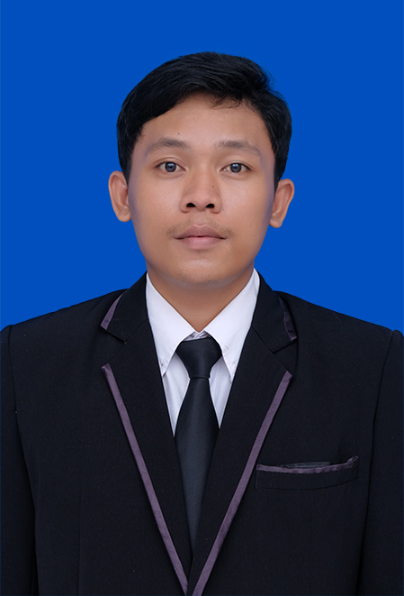

Lulusan Sarjana Statistika Universitas Bengkulu dengan minat pada analisis data, visualisasi data, pemrograman data science, dan pengolahan data untuk mendukung pengambilan keputusan.
Saya adalah lulusan Statistika dari Universitas Bengkulu yang memiliki kemampuan dalam analisis data, pengelolaan data, visualisasi data, serta penggunaan perangkat lunak statistik. Saya memiliki pengalaman magang di Badan Pusat Statistik dan aktif dalam organisasi mahasiswa.
RStudio, SPSS, EViews, Excel, Statistical Analysis
Data Processing, Data Management, Exploratory Data Analysis
Data Visualization, Canva, Infographic Design, PowerPoint
Communication, Teamwork, Problem Solving, Time Management
Analisis kemiskinan dan pengangguran menggunakan metode Nonparametric Regression dengan Local Polynomial Estimator pada data Indonesia.
Berkontribusi dalam penyusunan publikasi statistik daerah, pengecekan missing values, input data, dan pembuatan infografis selama magang di BPS Bengkulu Tengah.
Magang MBKM | Agustus 2024 - Desember 2024
Melakukan input, verifikasi, pengecekan data, identifikasi missing values, membantu penyusunan publikasi statistik, membuat infografis, serta membantu dokumentasi kegiatan instansi.
Anggota Sosial Pengabdian Masyarakat | 2023 - 2024
Aktif dalam kegiatan PPK Ormawa dan kegiatan sosial seperti galang dana untuk korban banjir dan musibah lainnya.
Public Relation & Bistik Division | 2022 - 2024
Berpengalaman dalam desain media organisasi, komunikasi mahasiswa, hearing kebijakan, serta penyampaian aspirasi mahasiswa.
Berikut adalah CV saya. Anda juga dapat mengunduh CV melalui tombol di bawah ini.
Download CVEmail: ramaekooo12@gmail.com
Phone: +62 852-6876-2502
Instagram: @rama._eko12
WhatsApp: Chat via WhatsApp